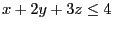
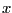
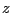

Next: C++ Interface Up: Gurobi Optimizer Quick Start Previous: Attributes
This section will work through a simple C example in order to illustrate the use of the Gurobi C interface. The example builds a simple Mixed Integer Programming model, optimizes it, and outputs the optimal objective value. This section assumes that you are already familiar with the C programming language. If not, a variety of books are available for learning the language (for example, The C Programming Language, by Kernighan and Ritchie).
Our example optimizes the following model:
| maximize | x | + | y | + | 2 z | ||
| subject to | x | + | 2 y | + | 3 z | 4 | |
| x | + | y | 1 | ||||
| x, y, z binary | |||||||
Example mip1_c.c
This is the complete source code for our example (also available as <installdir>/examples/c/mip1_c.c)...
#include <stdlib.h>
#include <stdio.h>
#include "gurobi_c.h"
int
main(int argc,
char *argv[])
{
GRBenv *env = NULL;
GRBmodel *model = NULL;
int error = 0;
double sol[3];
int ind[3];
double val[3];
double obj[3];
char vtype[3];
int optimstatus;
double objval;
int zero = 0;
/* Create environment */
error = GRBloadenv(&env, "mip1.log");
if (error || env == NULL) {
fprintf(stderr, "Error: could not create environment\n");
exit(1);
}
/* Create an empty model */
error = GRBnewmodel(env, &model, "mip1", 0, NULL, NULL, NULL, NULL, NULL);
if (error) goto QUIT;
/* Add variables */
obj[0] = -1; obj[1] = -1; obj[2] = -2;
vtype[0] = GRB_BINARY; vtype[1] = GRB_BINARY; vtype[2] = GRB_BINARY;
error = GRBaddvars(model, 3, 0, NULL, NULL, NULL, obj, NULL, NULL, vtype,
NULL);
if (error) goto QUIT;
/* Integrate new variables */
error = GRBupdatemodel(model);
if (error) goto QUIT;
/* First constraint: x + 2 y + 3 z <= 4 */
ind[0] = 0; ind[1] = 1; ind[2] = 2;
val[0] = 1; val[1] = 2; val[2] = 3;
error = GRBaddconstr(model, 3, ind, val, GRB_LESS_EQUAL, 4.0, NULL);
if (error) goto QUIT;
/* Second constraint: x + y >= 1 */
ind[0] = 0; ind[1] = 1;
val[0] = 1; val[1] = 1;
error = GRBaddconstr(model, 2, ind, val, GRB_GREATER_EQUAL, 1.0, NULL);
if (error) goto QUIT;
/* Optimize model */
error = GRBoptimize(model);
if (error) goto QUIT;
/* Write model to 'mip1.lp' */
error = GRBwrite(model, "mip1.lp");
if (error) goto QUIT;
/* Capture solution information */
error = GRBgetintattr(model, GRB_INT_ATTR_STATUS, &optimstatus);
if (error) goto QUIT;
error = GRBgetdblattr(model, GRB_DBL_ATTR_OBJVAL, &objval);
if (error) goto QUIT;
error = GRBgetdblattrarray(model, GRB_DBL_ATTR_X, 0, 3, sol);
if (error) goto QUIT;
printf("\nOptimization complete\n");
if (optimstatus == GRB_OPTIMAL) {
printf("Optimal objective: %.4e\n", objval);
printf(" x=%.0f, y=%.0f, z=%.0f\n", sol[0], sol[1], sol[2]);
} else if (optimstatus == GRB_INF_OR_UNBD) {
printf("Model is infeasible or unbounded\n");
} else {
printf("Optimization was stopped early\n");
}
QUIT:
/* Error reporting */
if (error) {
printf("ERROR: %s\n", GRBgeterrormsg(env));
exit(1);
}
/* Free model */
GRBfreemodel(model);
/* Free environment */
GRBfreeenv(env);
return 0;
}
Example details
Let us now walk through the example, line by line, to understand how it achieves the desired result of optimizing the indicated model.
The example begins by including a few include files. Gurobi C applications should always start by including gurobi_c.h, along with the standard C include files (stdlib.h and stdio.h).
Creating the environment
After declaring the necessary program variables, the example continues by creating an environment:
error = GRBloadenv(&env, "mip1.log");
if (error || env == NULL) {
fprintf(stderr, "Error: could not create environment\n");
exit(1);
}
Later attempts to create optimization models will always require an
environment, so environment creation should always be the first step
when using the Gurobi optimizer. The second argument to
GRBloadenv() provides the name of the Gurobi log file. If the
argument is an empty string or NULL, no log file will be written.
Note that environment creation may fail, so you should check the return value of the call.
Creating the model
Once an environment has been created, the next step is to create a model. A Gurobi model holds a single optimization problem. It consists of a set of variables, a set of constraints, and the associated attributes (variable bounds, objective coefficients, variable integrality types, constraint senses, constraint right-hand side values, etc.). The first step towards building a model that contains all of this information is to create an empty model object:
/* Create an empty model */ error = GRBnewmodel(env, &model, "mip1", 0, NULL, NULL, NULL, NULL, NULL); if (error) goto QUIT;The first argument to GRBnewmodel() is the previously created environment. The second is a pointer to the location where the pointer to the new model should be stored. The third is the name of the model. The fourth is the number of variables to initially add to the model. Since we're creating an empty model, the number of initial variables is 0. The remaining arguments would describe the initial variables (lower bounds, upper bounds, variable types, etc.), had they been present.
Adding variables to the model
Once we create a Gurobi model, we can start adding variables and constraints to it. In our example, we'll begin by adding variables:
/* Add variables */
obj[0] = -1; obj[1] = -1; obj[2] = -2;
vtype[0] = GRB_BINARY; vtype[1] = GRB_BINARY; vtype[2] = GRB_BINARY;
error = GRBaddvars(model, 3, 0, NULL, NULL, NULL, obj, NULL, NULL, vtype,
NULL);
The first argument to GRBaddvars() is the model to which the
variables are being added. The second is the number of added
variables (3 in our example).
Arguments three through six describe the constraint matrix coefficients associated with the new variables. The third argument gives the number of non-zero constraint matrix entries associated with the new variables, and the next three arguments give details on these non-zeros. In our example, we'll be adding these non-zeros when we add the constraints. Thus, the non-zero count here is zero, and the following three arguments are all NULL.
The seventh argument to GRBaddvars() is the linear objective coefficient for each new variable. The default sense of the objective is minimization, so we have negated the coefficients from our maximization objective here. We could also have used unmodified maximization coefficients and changed the objective sense to maximization (by changing the ModelSense attribute of the model).
The next two arguments specify the lower and upper bounds of the variables, respectively. The NULL values indicate that these variables should take their default values (0.0 and 1.0 for binary variables).
The tenth argument specifies the types of the variables. In this example, the variables are all binary (GRB_BINARY).
The final argument gives the names of the variables. In this case, we allow the variable names to take their default values (X0, X1, and X2).
Updating the model - lazy modification
Model modifications in the Gurobi optimizer are done in a lazy fashion, meaning that the effects of the modifications are not seen immediately. This approach makes it easier to perform a sequence of model modifications, since the model doesn't change while it is being modified. However, lazy modifications do require you to manually integrate model changes when needed. This is done with the following routine:
/* Integrate new variables */ error = GRBupdatemodel(model); if (error) goto QUIT;In our example, the model would contain zero variables immediately before the call to GRBupdatemodel(), and three immediately after. Later attempts to add constraints to the model without first making this call would fail, since the model would contain no variables.
Adding constraints to the model
Once the new variables are integrated into the model, the next step is to add our two constraints. Constraints are added through the GRBaddconstr() routine. To add a constraint, you must specify several pieces of information, including the non-zero values associated with the constraint, the constraint sense, the right-hand side value, and the constraint name. These are all specified as arguments to GRBaddconstr():
/* First constraint: x + 2 y + 3 z <= 4 */ ind[0] = 0; ind[1] = 1; ind[2] = 2; val[0] = 1; val[1] = 2; val[2] = 3; error = GRBaddconstr(model, 3, ind, val, GRB_LESS_EQUAL, 4.0, NULL); if (error) goto QUIT;The first argument of GRBaddconstr() is the model to which the constraint is being added. The second is the total number of non-zero coefficients associated with the new constraint. The next two arguments describe the non-zeros in the new constraint. Constraint coefficients are specified using a list of index-value pairs, one for each non-zero value. In our example, the first constraint to be added is . We have chosen to make  the first variable in our constraint matrix, the second, and  the third (note that this choice is arbitrary). Given our variable ordering choice, the index-value pairs that are required for our first constraint are (0, 1.0), (1, 2.0), and (2, 3.0). These pairs are placed in the ind and val arrays.
The fifth argument to GRBaddconstr() provides the sense of the new constraint. Possible values are GRB_LESS_EQUAL, GRB_GREATER_EQUAL, or GRB_EQUAL. The sixth argument gives the right-hand side value. The final argument gives the name of the constraint (we allow the constraint to take its default name here by specifying NULL for the argument).
The second constraint is added in a similar fashion:
/* Second constraint: x + y >= 1 */ ind[0] = 0; ind[1] = 1; val[0] = 1; val[1] = 1; error = GRBaddconstr(model, 2, ind, val, GRB_GREATER_EQUAL, 1.0, NULL); if (error) goto QUIT;Note that routine GRBaddconstrs() would allow you to add both constraints in a single call. The arguments for this routine are much more complex, though, without providing any significant advantages, so we recommend that you add one constraint at a time.
Optimizing the model
Now that the model has been built, the next step is to optimize it:
error = GRBoptimize(model); if (error) goto QUIT;This routine performs the optimization and populates several internal model attributes, including the status of the optimization, the solution, etc. Once the function returns, we can query the values of these attributes. In particular, we can query the status of the optimization process by retrieving the value of the Status attribute...
error = GRBgetintattr(model, GRB_INT_ATTR_STATUS, &optimstatus); if (error) goto QUIT;The optimization status has many possible values. An optimal solution to the model may have been found, or the model have been determined to be infeasible or unbounded, or the solution process may have been interrupted. A list of possible statuses can be found in the Gurobi Reference Manual. For our example, we know that the model is feasible, and we haven't modified any parameters that might cause the optimization to stop early (e.g., a time limit), so the status will be GRB_OPTIMAL.
Another important model attribute is the value of the objective function for the computed solution. This is accessed through this call:
error = GRBgetdoubleattr(model, GRB_DBL_ATTR_OBJVAL, &objval); if (error) goto QUIT;Note that this call would return a non-zero error result if no solution was found for this model.
Once we know that the model was solved, we can extract the X attribute of the model, which contains the value for each variable in the computed solution:
error = GRBgetdoublearrayattr(model, GRB_DBL_ATTR_X, 0, 3, x);
if (error) goto QUIT;
printf(" x=%.0f, y=%.0f, z=%.0f", x[0], x[1], x[2]);
This routine retrieves the values of an array-valued attribute. The
third and fourth arguments indicate the index of the first array
element to be retrieved, and the number of elements to retrieve,
respectively. In this example we retrieve entries 0 through 2 (i.e.,
all three of them)
Error reporting
We would like to point out one additional aspect of the example. Almost all of the Gurobi methods return an error code. The code will typically be zero, indicating that no error was encountered, but it is important to check the value of the code in case an error arises.
While you may want to print a specialized error code at each point where an error may occur, the Gurobi interface provides a more flexible facility for reporting errors. The GRBgeterrormsg() routine returns a textual description of the most recent error associated with an environment:
if (error) {
printf("ERROR: %s\n", GRBgeterrormsg(env));
exit(1);
}
Once the error reporting is done, the only remaining task in our example is to release the resources associated with our optimization task. In this case, we populated one model and created one environment. We call GRBfreemodel(model) to free the model, and GRBfreeenv(env) to free the environment.
Building and running the example
To build and run the example, please refer to the files in <installdir>/examples/build. For Windows platforms, this directory contains C_examples_2008.sln and C_examples_2010.sln (Visual Studio 2008 and 2010 solution files for the C examples). Double-clicking on the solution file will bring up Visual Studio. Clicking on the 'mip1_c' project, and then selecting Run from the Build menu will compile and run the example. For Linux or Mac OS platforms, the <installdir>/examples/build directory contains an example Makefile. Typing make mip1_c will build and run this example.
The C example directory <installdir>/examples/c contains a number of examples. We encourage you to browse and modify them in order to become more familiar with the Gurobi C interface. We also encourage you to read the Gurobi Example Tour for more information.